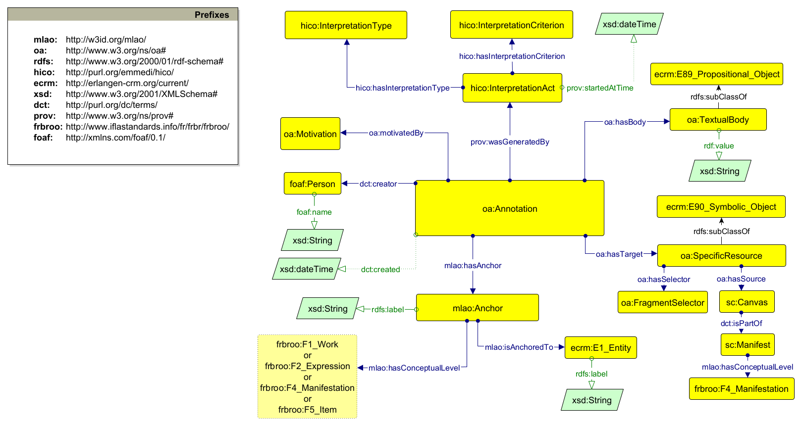

Multi-Level Annotation Ontology (MLAO): Description
back to ToC
Following the Web Annotation Ontology, the annotation itself is an instance of
the class oa:Annotation with the following properties and object classes: *
The annotation is connected through the oa:hasTarget property to a target
(i.e. the annotatum), represented by an instance of the oa:SpecificResource
class, which identifies part of another resource (referenced with
oa:hasSource), e.g. a particular representation of a resource, a resource with
styling hints for renders, or any combination of these. In the case of digital
images or facsimile using IIIF, the source is the Canvas which conveys the
image, while the property oa:hasSelector is connected to a oa:FragmentSelector
instance which describes the set of coordinates of the segment or region of
interest within the source resource. * The annotation is connected through the
oa:hasBody property to a body represented as an instance of the oa:TextualBody
class. The body (i.e., the annotans) contains the actual content of the
annotation, e.g. unstructured textual data such as a comment, a tag, a
transcription etc. * An instance of the oa:Motivation class is linked with the
annotation through the oa:hasMotivation object property, and used to record
intents of the annotator for the creation of the Annotation (e.g. commenting,
tagging, transcribing etc). An anchor is then represented as an instance of
the mlao:Anchor class and connected with an instance of the oa:Annotation
class by employing the mlao:hasAnchor property. The mlao:Anchor class
describes the intentional object or referent of the annotation, which can be
different from the target itself. The instance of the Anchor is then linked
through the mlao:hasConceptualLevel object property to an instance of type
frbroo:F1_Work, frbroo:F2_Expression, frbroo:F4_Manifestation or
frbroo:F5_Item, describing the FRBR conceptual level. Finally, the Anchor is
linked through the mlao:isAnchoredTo object property to an instance of the
work it refers to which represents its real-world counterpart. By associating
the annotation with a referent in the “real world” (an URI that describes an
entity) and with an area in a piece of media that captured it, e.g. the
target, we reduce the semantic deficit that separates the annotation from the
thing being annotated and improve the computer's ability to use the link in a
more general manner. For example, in the annotation modelled in Figure 2 the
creator annotates a specific portion of the image to convey content, namely
the transcription, which does not refer to the image itself but to another
entity. In fact, the transcription does not concern the digital image itself
but rather another kind of entity connected to the manuscript Vat. gr. 984
manuscript, which is an Expression according to the FRBR levels. Consequently,
the annotation is linked to an anchor by the property mlao:hasAnchor. This
allows the annotator to specify the conceptual level to which they are
referring. Finally, the instance of mlao:Anchor class has two properties,
mlao:hasConceptualLevel and mlao:isAnchoredTo, which are employed to specify
the frbroo:F2_Expression and the real-world entity, respectively. The latter
is represented by the URI that denotes the manuscript Vat. gr. 984, which is
linked to the digital image. The following figure shows classes (rectangles),
object properties (solid lines beginning with a solid circle and ending with a
solid arrow), and assertions among classes (solid lines ending with a solid
arrow).
-
The annotation is connected through the oa:hasTarget property to a target
(i.e. the annotatum), represented by an instance of the oa:SpecificResource
class, which identifies part of another resource (referenced with
oa:hasSource), e.g. a particular representation of a resource, a resource
with styling hints for renders, or any combination of these. In the case of
digital images or facsimile using IIIF, the source is the Canvas which
conveys the image, while the property oa:hasSelector is connected to a
oa:FragmentSelector instance which describes the set of coordinates of the
segment or region of interest within the source resource.
-
The annotation is connected through the oa:hasBody property to a body
represented as an instance of the oa:TextualBody class. The body (i.e., the
annotans) contains the actual content of the annotation, e.g. unstructured
textual data such as a comment, a tag, a transcription etc.
